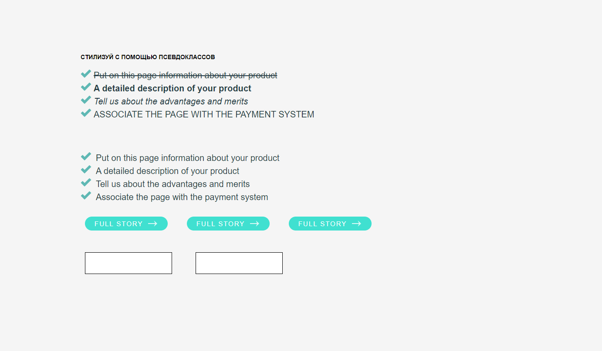

Обо мне
Кто я такой?
Меня зовут Михаил , и мне 19 лет.
Моё обучение
Я являюсь студентом 2 курса в университете ХНУРЭ. Учусь на специальности компьютерные науки.
Где я учился верстать
Сначала я пытался выучится по бесплатным курсам , но вскорее понял , что там объясняют плохо, по этому я занялся поиском курсов. Тогда я наткнулся на обучающий портал html academy ,где купил подписку и начал обучатся, собственно, где я и набираюсь знаний по сей день.
Почему я решил занятся вёрсткой
Обучаясь в университете , я учил 2 языка програмирования , которые мне абсолютно не нравились , тогда у меня начали появлятся мысли о смене проффесии , но увидев , чем занимается моя сестра , начал интересоватся вёрсткой , которая мне очень понравилась.Именно тогда я понял , что это оно , то , чем я хотел бы заниматся.
Мои особенности
- Я довольно быстро усваиваю материал
- Быстро могу найти решение сложной задачи
- Не могу спокойно идти отдыхать ,не выполнив поставленую задачу
В общем...
Мне ещё предстоит многому научится , но каръеру в It я уже готов начать , что бы наработать опыт , и в дальнейшем стать первокласным программистом
Мои навыки
Список навыков
- Владею базовыми навыками работы с Html 5
- Владею базовыми навыками работы с CSS 3
- На начальном уровне владею js
Перспективы
Я постепенно изучаю js , и как только я овладею достаточными знаниями , я буду учить фреймворк React, что думаю определённо будет полезно.
Пример моей работы
К сожалению, у меня нет никаких серъёзных работ , только свёрстаные учебные макеты
